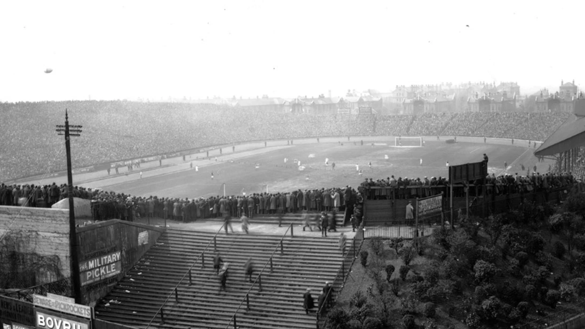
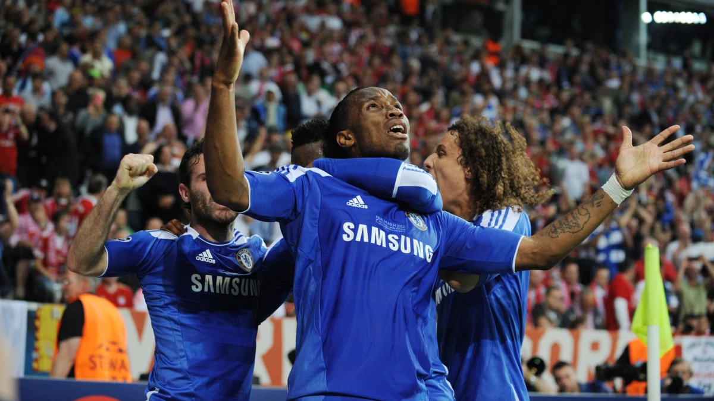
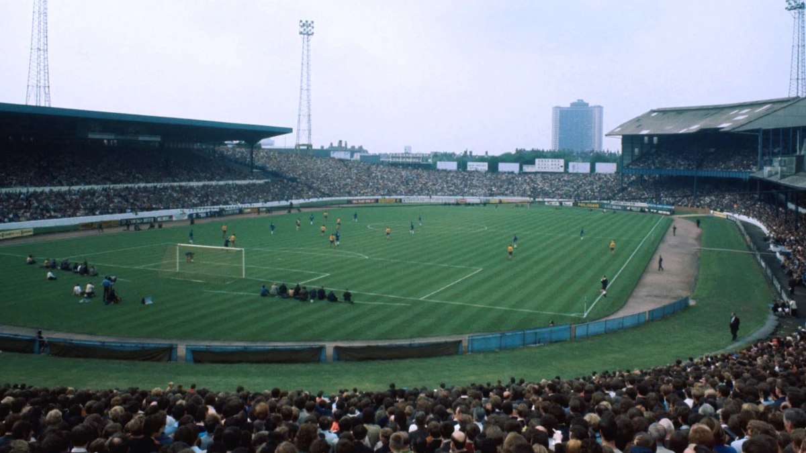
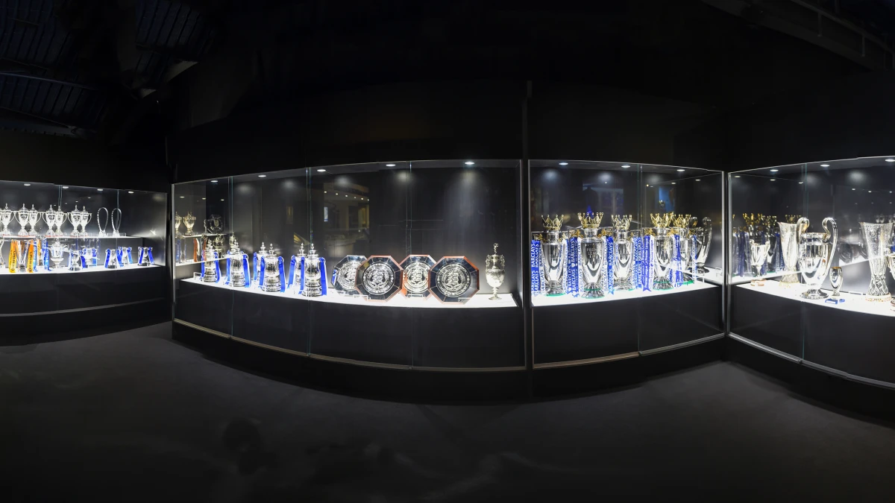
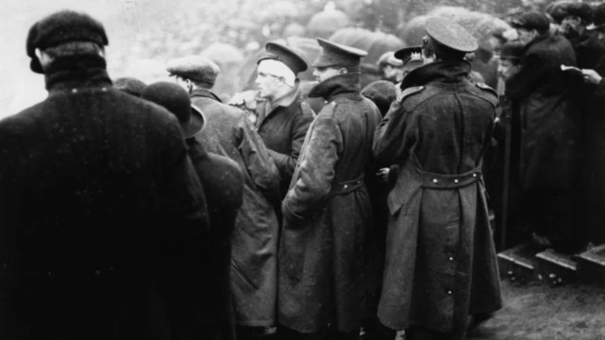
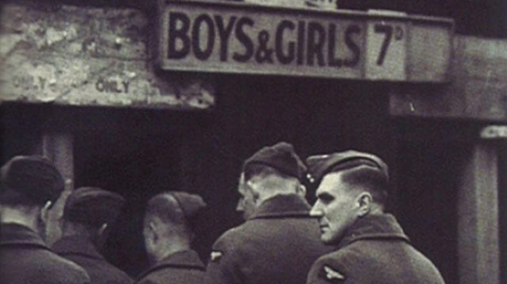

TRANG CHỦ
GIỚI THIỆU
LỊCH SỬ
THÀNH TÍCH
NGƯỜI HÂM MỘ
TRANG CHỦ
GIỚI THIỆU
LỊCH SỬ
THÀNH TÍCH
NGƯỜI HÂM MỘ

Với hơn một thế kỷ bóng đá được chơi tại địa điểm chính ở phía tây London, nơi đóng vai trò quan trọng đối
với sự ra đời của Câu lạc bộ bóng đá Chelsea vào năm 1905, có một câu chuyện tuyệt vời để kể, đầy tham
vọng, những cầu thủ ngôi sao, hành trình đầy kịch tính để giành chiến thắng và phong cách thời trang.
Cũng có những sự đảo lộn và thử thách khó khăn trên đường đi chỉ làm tăng thêm sự hấp dẫn, và khi truy cập Câu
chuyện về Chelsea bên
dưới, mỗi bước ngoặt và ngã rẽ được nhớ lại từng chương.




